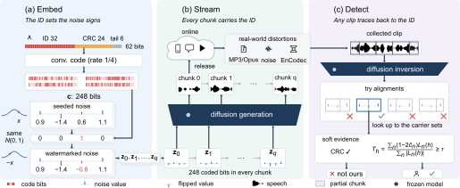

Embed in noise
Encode the payload with CRC and a convolutional code. Set carrier signs while retaining magnitudes to preserve each block’s Gaussian distribution.
Training-Free Multi-Bit Watermarking for Streaming Text-to-Speech via Noise-Space Embedding
Embed a message in the initial noise. Generate speech through the existing TTS sampler. Recover the message from a short recording.

Unwatermarked and NoiseStamp recordings across four TTS models. Choose the language and clip length below.
Loading comparisons…
One player at a timePreparing the listening examples…
Recordings share text, voice, and synthesis settings, but may be separate generation draws. In particular, NoiseStamp audio is not expected to be sample-identical to the reference. These examples illustrate perceptual quality, not waveform-aligned residuals or aggregate recovery rates.
Reload this page to try again. If you opened a local file, serve the directory over HTTP instead.
One English example per method on IndexTTS2. Sentences differ across methods, so compare reference and watermarked audio within each row rather than treating the examples as a matched-sentence ranking.
Preparing the method comparisons…
NoiseStamp embeds in Gaussian initial noise rather than modifying completed audio. The TTS model stays unchanged, and embedding adds no separate model inference pass.
Encode the payload with CRC and a convolutional code. Set carrier signs while retaining magnitudes to preserve each block’s Gaussian distribution.
Supply the prepared noise blocks to the host’s existing sampler. Repeated codeword information supports recovery from short recordings.
Estimate the initial noise, search for alignment, and combine soft evidence. Viterbi decoding, CRC, and a consistency check determine the output.
NoiseStamp recovers the full 32-bit message from one-second recordings at rates of 96.5–100% across the four evaluated hosts.
| TTS host | 1-s recovery | 2-s recovery | ΔUTMOS |
|---|---|---|---|
| F5-TTS | 100.0% | 100.0% | +0.031 |
| IndexTTS2 | 100.0% | 100.0% | −0.026 |
| CosyVoice3 | 99.8% | 100.0% | −0.007 |
| VoxCPM2 | 96.5% | 100.0% | −0.007 |
Accepted exact-message recovery on 400 excerpts per host and duration. ΔUTMOS is the change from unwatermarked synthesis. Values are reported results, not measurements computed by this webpage.